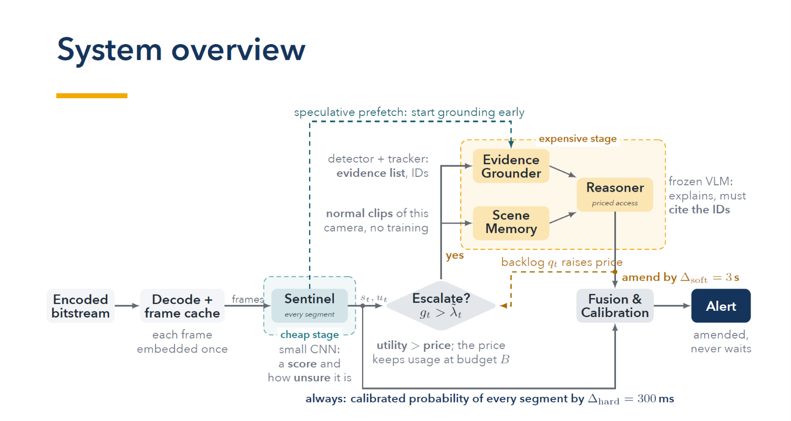
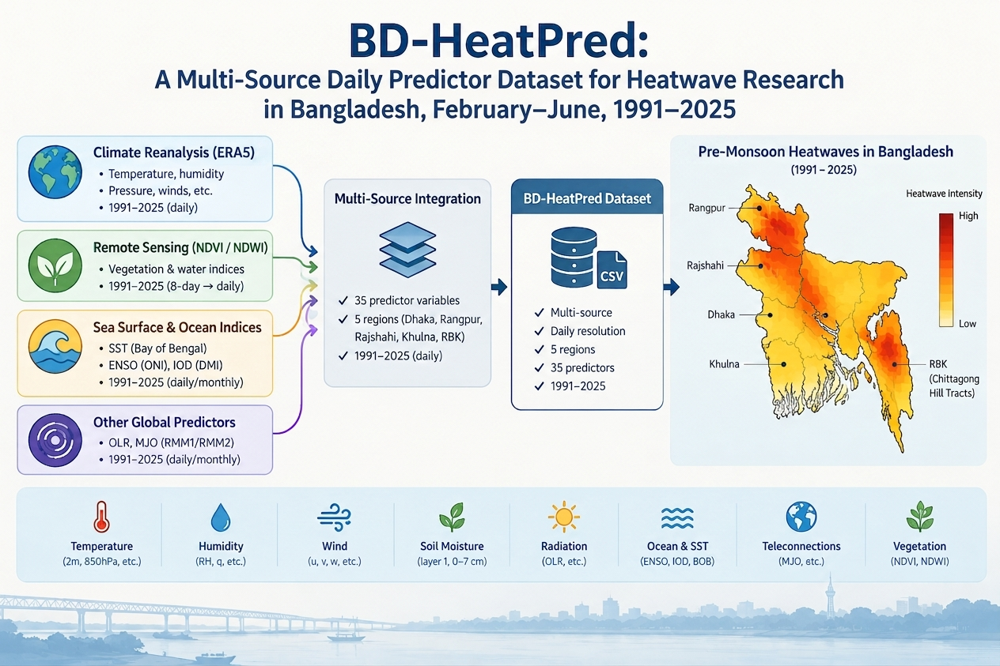
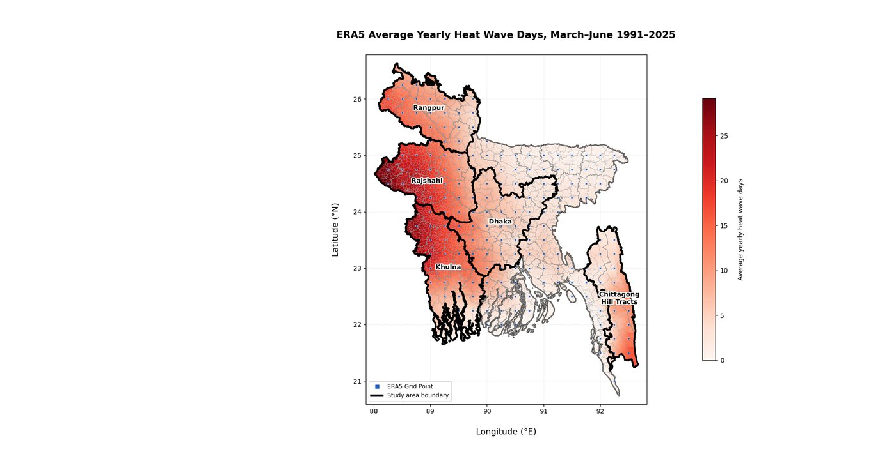
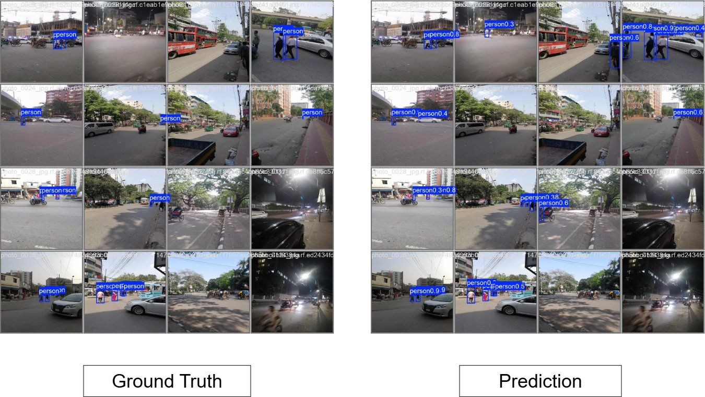
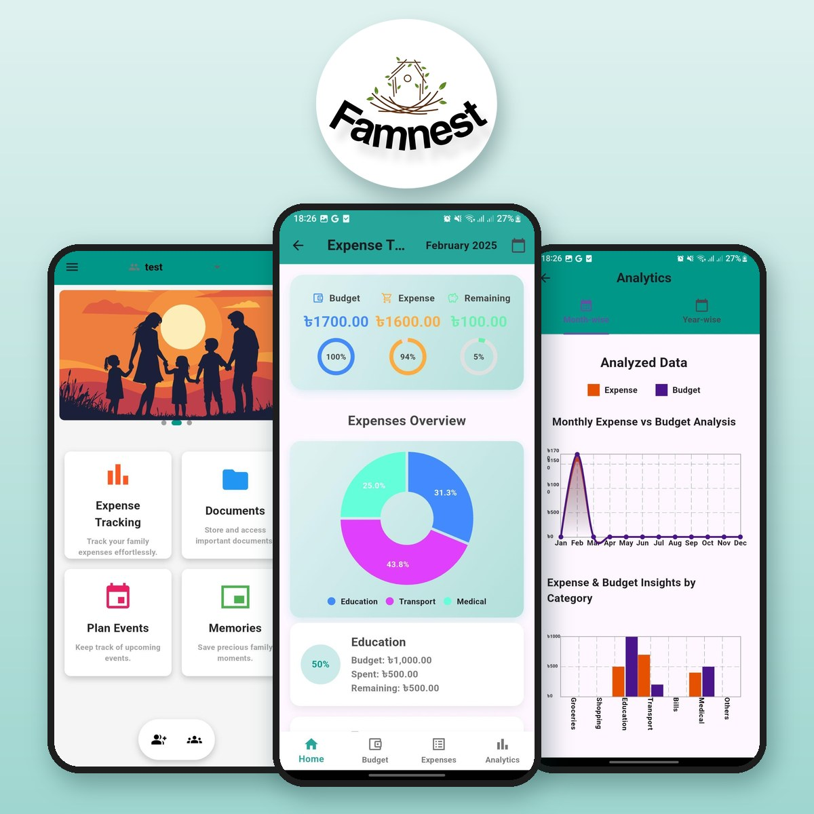
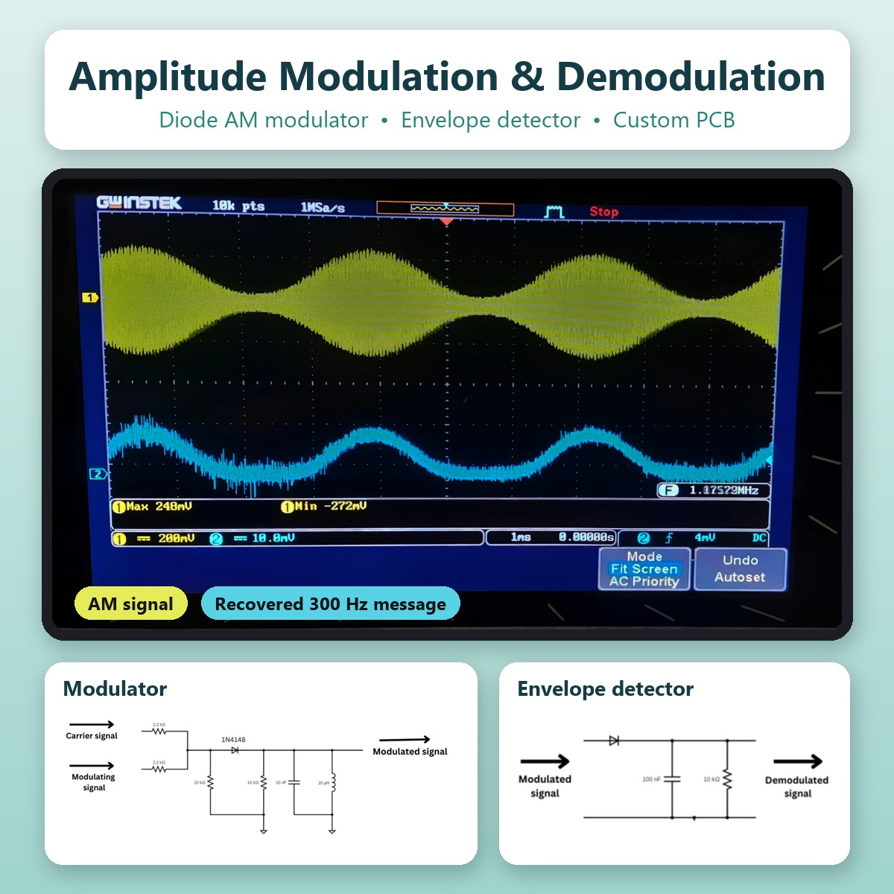

Hi! I am a fourth-year undergraduate student in the Department of Computer Science and Engineering at the University of Dhaka, Dhaka, Bangladesh.
Research Interests
Education
Bachelor of Science
Sept 2022 – Expected Feb 2027
Department of Computer Science and Engineering, University of Dhaka,
Dhaka, Bangladesh
Undergraduate Thesis

ARGUS: An Adaptive, Resource-Aware, Grounded Understanding
System for Real-Time Explainable Video Anomaly Detection
Ongoing
- Developing a resource-aware framework for real-time video anomaly detection with selective vision-language reasoning.
- Investigating evidence-grounded explanations to improve the interpretability of detected video anomalies.
Supervisor:
Ahasanul Alam
Research Projects

BD-HeatPred: A Multi-Source Daily Predictor Dataset for Heatwave Research in Bangladesh, February–June, 1991–2025
Ongoing
- Developing a region-specific dataset for Bangladesh by integrating 35 atmospheric, land-surface, and global teleconnection predictors across five regions: Dhaka, Khulna, Rajshahi, Rangpur, and the Rangamati–Bandarban–Khagrachari (RBK).
Supervisor:
Suchi Chaki

BD-HeatPred-Based Heatwave Onset Prediction and Regional Driver Analysis in Bangladesh
Ongoing
- Heatwave onset prediction in Bangladesh using the BD-HeatPred dataset, with regional driver analysis to identify the most influential predictors across five regions.
Supervisor:
Suchi Chaki
Academic Projects

Deep Learning-Based Illegal Road Crossing Detection in Dhaka
Urban Traffic Surveillance
- Created a Dhaka-specific pedestrian dataset from six locations under diverse traffic and environmental conditions.
- Introduced a spatially aware 3-class scheme: person_middle, person_side, and person_sidewalk.
- Trained and compared YOLOv8m/l and YOLO11m/l on single and multi-class detection tasks.
- Conducted 640/960/1280 px resolution ablation, selecting 960×960 as the practical operating point.
Tools: Python, PyTorch, Ultralytics YOLO,
Roboflow
ATM Simulator System
- Developed a Java Swing-based ATM simulator with secure card/PIN authentication and complete banking workflows including account registration, deposits, withdrawals, fast cash, PIN changes, and balance enquiry.
- Designed and integrated a MySQL-backed transaction management system using JDBC to persist user accounts and banking transaction records.
Tools: Java, Java Swing, JDBC, MySQL, Apache Ant

FamNest — Family Finance & Organizing App
- Built the analysis component of FamNest's expense tracker, with year-wise and month-wise views. Line graphs compare expenses with budgets across the past five years and across the months of a year. Bar graphs compare them by category, such as groceries, shopping, education and medical.
- Made the graphs update in real time as new expense and budget data are added, and kept the charts responsive, with a balanced layout and consistent aspect ratio across screen sizes.
Tools: Flutter, Dart, FastAPI, MongoDB Atlas,
Cloudinary

Amplitude Modulation and Demodulation
- Built a diode-based amplitude modulator (1N4148 with an LC tank near 500 kHz) that takes a carrier and a message signal and outputs the AM signal.
- Built an envelope-detector demodulator (1N34A germanium diode with an RC low-pass filter) that recovered the 300 Hz message at its original frequency and shape.
- Prototyped both circuits on a breadboard, then etched and soldered them on a PCB and checked them on an oscilloscope.
Tools: PCB fabrication, soldering, signal
generator, oscilloscope, multimeter
Skills and Tools
Programming
Python, C, C++, Java
Machine Learning & Deep Learning
PyTorch, Keras, NumPy, Pandas, Matplotlib, Seaborn, Hugging Face
Computer Vision
OpenCV, Roboflow, Ultralytics YOLO
Climate & Geospatial Analysis
ERA5/ERA5-Land, NetCDF, Xarray, GeoPandas, GIS, Spatial Analysis,
Grid-Based Analysis, Remote Sensing (NDVI, NDWI), Google Earth
Engine (GEE), Climate Anomaly & Teleconnection Analysis (SST,
ENSO, IOD, MJO, OLR)
Web/Software Development
React.js, Node.js, Express.js, Java Swing
Databases
MySQL, PostgreSQL, MongoDB, Oracle Cloud Database
Embedded Systems
ESP32, STM32F446RE, Keil uVision, Arduino
Development & Research Tools
Git, GitHub, Linux, VS Code, PyCharm, LaTeX, Google Colab, Jupyter
Notebook
Networking & Design Tools
Cisco Packet Tracer, Canva
Competitive Programming
200+ problems solved on Codeforces, LeetCode, CodeChef, HackerRank and CSES, mainly implementation, mathematics and number theory, greedy algorithms, strings, sorting and searching, graph traversal (DFS/BFS), and core data structures.
Scholarships
2019
General Scholarship
(Outstanding academic performance in the Secondary School
Certificate (10th grade) Examination, Dhaka Board)